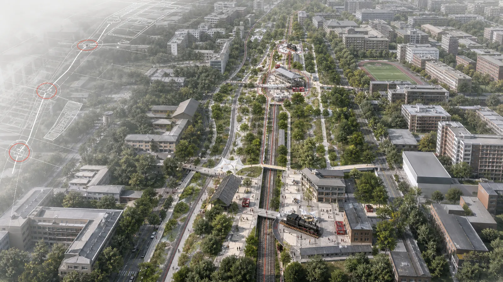
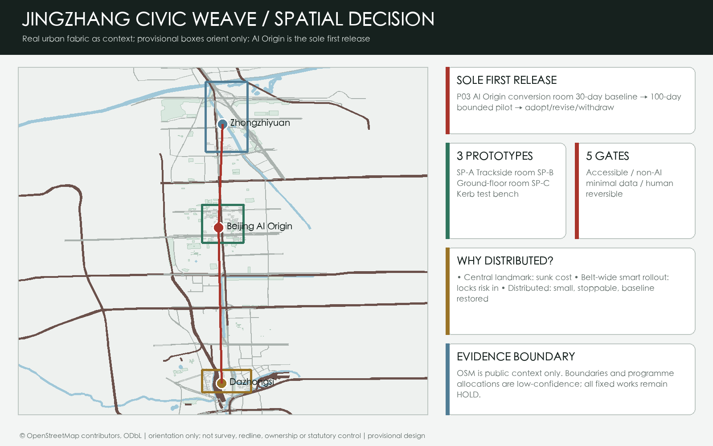
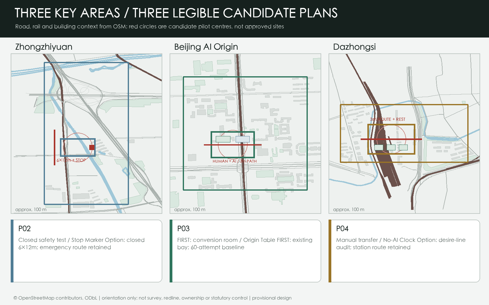
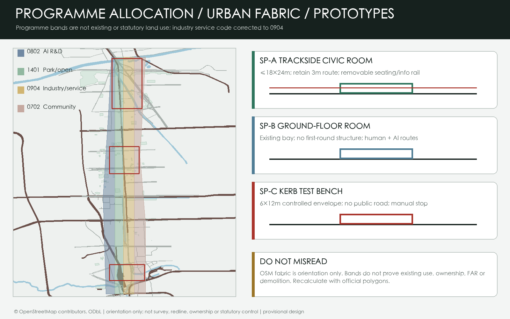
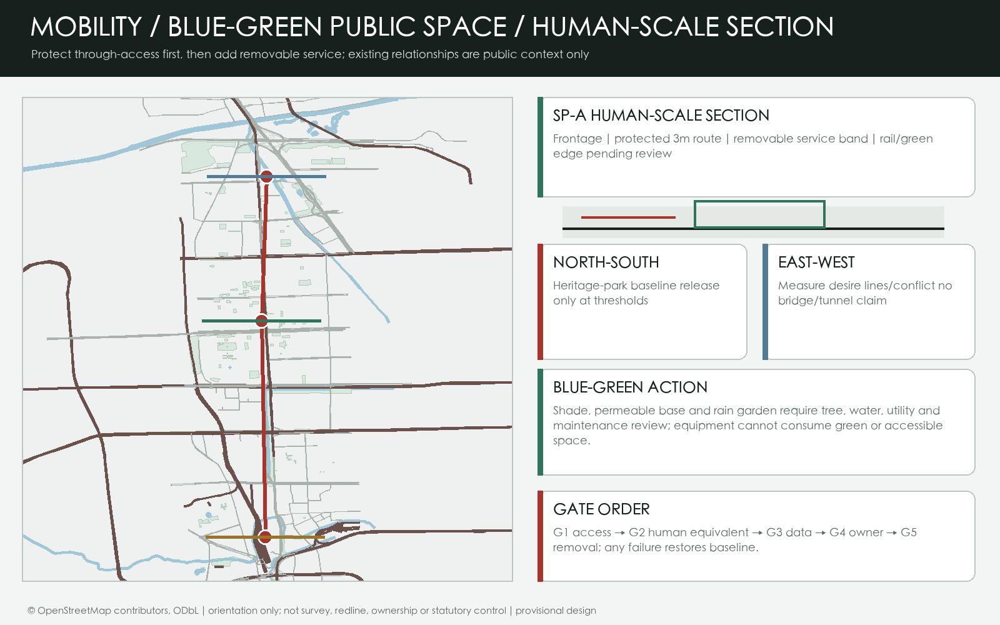
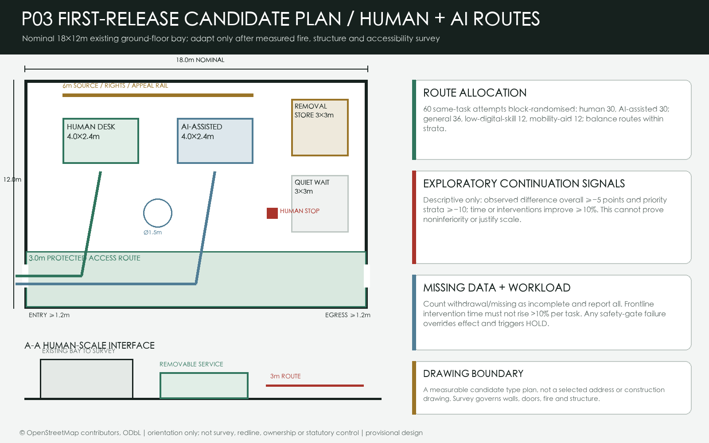
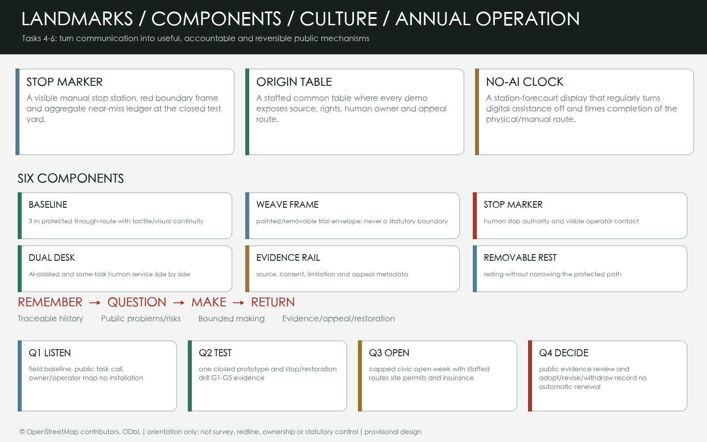
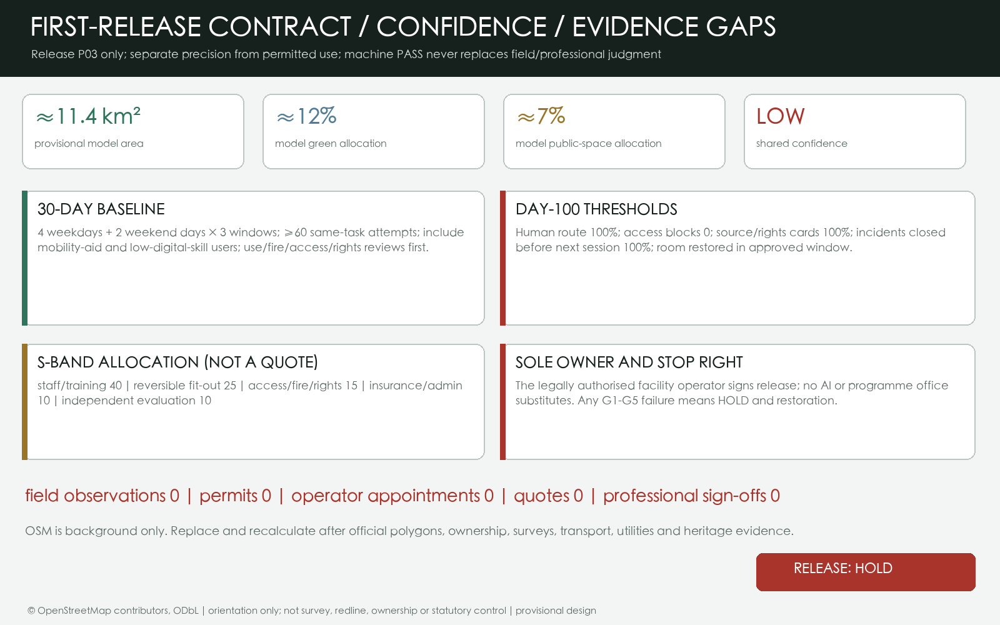

RELEASE STATUS HOLD
JINGZHANG CIVIC WEAVE
A public-space operating contract grounded in real urban context, protected by a human baseline, and releasing only one 100-day first pilot.
Read full report
LOW-CONFIDENCE DESIGN MODEL
≈11.4 km²provisional area
≈12%design green ratio
≈7%public-space ratio
0field/permit/operator/quote/sign-off
Overview map

Three-level scope
Announced levels: about 43.6 km², 11.4 km² and 368.4 ha; polygons await official data. Evidence: proposal.en.md and geometry/site_boundary.geojson.
Key areas

Land use

Mobility

Blue-green public space
Shade, permeable base and rain garden proceed only after water, green, tree and maintenance review. Evidence: geometry/green_space.geojson.
Buildings
The building layer records three reversible trial envelopes only, never existing stock or capacity. Evidence: geometry/buildings.geojson.
Renewal projects

AI scenarios

Core metrics

Task coverage
Unique sections, drawings and metrics for all six tasks are indexed in compliance_matrix.json.
Self-check
Four-gate self-check is formal-review-ready; provisional key-area notices remain. Evidence: self_check.json.
Sources
OSM context is ODbL; formal sources and limits are in sources.json.
Assumptions
Controls, fieldwork, cost, location and OSM limits are itemised in assumptions.json.